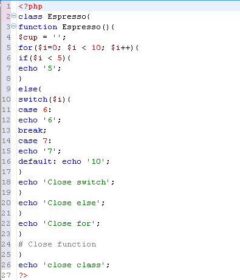
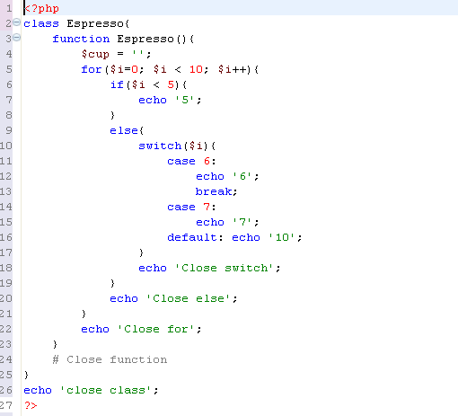

The Code Formatter automatically formats code by indenting it according to the code's internal syntax.
Open or create an unformatted PHP file in the Editor and enter PHP code.

Press Ctrl + Shift + F
Right click and select Format > Document.
The code will automatically be formatted according to the following formatting rules:
The first line will be left-aligned.
Every line will start at the same horizontal position that the previous line started at.
A line that begins with a closed curly bracket [ } ] will be indented to the left. The amount of indentation will be as was set in the Code Formatter's configuration settings.
An open curly bracket [ { ] at the end of a line will indent the following line one tab to the right.
Both "case" and "default" expressions decrease the indentation level that preceeds them and increase the level that follows them.
